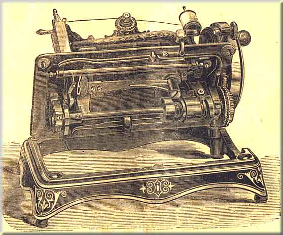

We have several sizes which are used chiefly for sheeting, table cloths, and material generally of this description. In ordering there hemmers, the size of them should be mentioned.
We also make an adjustable hemmer, which can be adjusted to make hems of any size up to an inch.
INSTRUCTION -- Leave the ordinary presser foot on the machine, raising it from the feed. Attach the hemmer to the bed of the machines by means of the gauge screw No. 202 (some of the larger sizes are fastened with two screws). Enter the edge of the material in the hemmer so as to fill the scroll; work it forward and back a little until the hem is turned evenly; let the presser foot down, being careful not to disarrange the hem; start the machine, and guide the material so as to keep the scroll filled.
These hemmers are charged extra.
We have several kinds, adapted for different descriptions of work, such as dressmaking, tailoring, hat binding, &c. In ordering, the purpose for which it is required should be stated.
Binders are charged extra, and instructions sent, if required.
This is a special attachment, and is charged extra. We give instructions fot the description of corder most generally used.
INSTRUCTIONS -- Fold the material and crease it down, pass one edge of the material under and the other over the corder blade, so that the end of the corder blade will be between the cloth and close against the crease, and let down the foot upon the work. In stitching in the forst cord, guide the work slightly to the left, so as to lay the cord close into the crease, keeping the work smoothly in front of the needle, the cord passing through the left hand groove in the bottom of the corder foot. Stitch the second cord in close against the first by guiding the work slightly to the left, as before.
Make the stitch rather longer than in ordinary sewing, and in turning square corners have the needle down.
This attachment will be charged for extra.
We now give this attachment with each step-feed machine.
INSTRUCTIONS -- Place the pin through the hole in the presser foot, and secure it by the screw No. 107. The material to be gathered or ruffled is then put under the ruffler, so as to rest on the feed. The band, if one is to be sewn on at the same time, must be placed between the opening in the ruffler, and should be held a little tightly with the hand, It is necessary to lengthen the stitch and loosen the tension.
NOTE -- The following accessories, viz.: A gauge, thumb-screw, twelve needles, six bobbins, one wrench, oil-can, screw-driver, shuttle screw-driver, an extra needle or throat-plate, a narrow hemmer (which is also a feller), a braider and quilting gauge, go ith each family machine -- also with the step feed B and step feed C machines -- free of charge.
--------------------------------------
The Half Case is useful for preserving the machine from dust, and for preventing its improper use; at the same time it forms a handsome piece of furniture. Price 20s.
For preserving the machine, and for facility in transport.
Plain, 5s.; Polished, 10s.; Black Walnut, 15s.
This illustration shows the Howe Hand Machine, with all the latest improvements. The machine as above can be placed on a stand, and the belt can either be put in the groove on the large hand wheel, which gives a very easy motion; or the belt may be put on the small pulley on the shaft, which gives greater speed -- an essential in very light work -- but not quite the same power.
If the purchaser requires the machine to work by treadle only, and not by hand, a hole can be cut in the table top, and the machine placed therein, the same as the A and B machines.
The construction of the machine is so perfect that it will do what may be considered light, and also heavy work fr a hand machine, but we do not recommend this machine to be kept constantly on very heavy work.
To prevent the liability, when moving the machine, of having the head drop from the base, we sometimes put a screw into the bed-hinge stud (239) with a washer, which perfectly secures the bed of the machine to the base. This is not actually essential, but is found serviceable when perfect security is required against the possibility of accident.
Nearly all the parts of the Howe Hand Machine are similar to those of the A and B machines. Some are smaller, but the same in principle and action; therefore in giving instructions we only touch on those points which are on this machine and not on the others.

Pull out the nut on the side of the wheel, turn it hal way, so as to free the pin from the large geared wheel, thus allowing the hand wheel to revolve without turning the machine; then lift the winder, so that it will press against the wheel; and place the bobbin according to the instructions given in page 9. When finished pull the winder to the right, and it will fall and rest upon the bed plate. Replace the nut, so that the hand wheel is connected with the geared wheel, and the machine is ready to work.
The Shuttle Lever (78) is different in form at the end from the lever of the A, B and C. The two holes in the end are made oblong, so that the shuttle-carrier can be adjusted either nearer to or farther from the shuttle race, as may be found necessary.
In putting the shuttle into the machine, care should be taken not to destroy the spring (277) at the back of the shuttle-carrier, which is put there for the purpose of pressing the shuttle against the face of the race; should the spring become broken, the shuttle would be liable not to catch the loop of the thread, and therefore not pass through.
Press the spring of the latch to the right, and turn the machine over on its hinges. Oil all the bearings, and follow instructions given in page 7.
All attachments and accessories which can be used upon our Family Machines for braidning, hemming, felling, &c., may be applied to this machine.
Instead of the above top tension (No.116), the old style flat tension, which is adjusted by a set screw, can be supplied if desired.
On the end of the shaft of the machine is a conical cam (182), against which the feed rider (175) rests. Connected with this cam is a thumb nut (184). By turning this nut so that the cam (182) will be moved on to the shaft, the stitch will be lengthened; and by reversing this nut so that the cam is moved towards the end of the shaft, the stitch will be shortened.
On the "C" machine the conical feed cam (No.182) is much larger than on the "B", which enables the operator to make a much longer stitch; but if specially ordered this larger cam could be adjusted to the "B" machine, where work with a very long stitch is required.
To Raise the Feed -- loosen the nut (165), on the feed-wheel stud (163), and press the feed-wheel (162) upwards, and tighten the nut again firmly in its place. For ordinary dewing, the teeth of the feed-wheel should rise about 1/32 of an inch above the top of the needle plate. When using the machine for leather binding, or on thick wadded fabrics, the teeth should come up about 1/20 of an inch above the needle plate.
To Lower the Feed -- loosen the nut as before, and the feed-wheel will drop downwards as far as you wish. When it is in proper position, tighten the nut as before.
The feed-clutches (172) should be kept well oiled to prevent wear, and also to make them work evenly and securely.
Care should be taken that the feed-rider (175) works freely in the feed-clutch lever (169), so as not to cut the feed-cam (182).
The feed-brake (177) should at all times rest firmly on the feed-wheel.
Take the flat presser foot off and fasten the roll presser (218) to the presser bar; let the edge of the roll presser be close to the needle hole, and fasten it securely to the presser bar by screws (223).
This attachment is given with every wheel-feed machine, and is used in place of the flat presser when stitching heavy material.
Roll Presser, Flat Presser, Tucking Guide and Screw, Six Bobbins, Twelve Needles, Two Screw Drivers, Wrench, Oil Can, and ectra Throat Plate.
All the parts of the wheel-feed machines are the same as those of the step-feed machines, except the parts as numbered and named in the plate of parts section K.